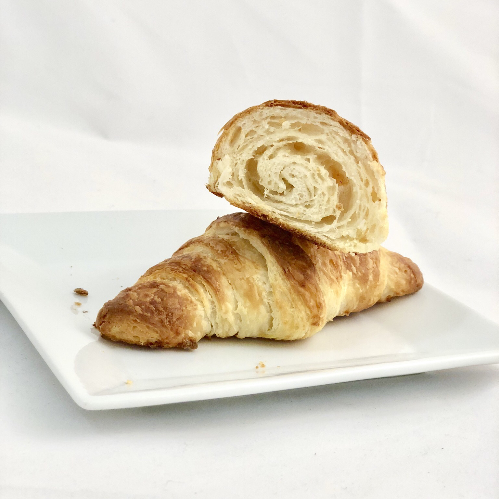

Croissant Recipe

Authentic French croissants.
Ingredients
- 1 ¼ teaspoons active dry yeast
- 3 tablespoons warm water (110 degrees F/45 degrees C)
- 1 teaspoon white sugar
- 1 ¾ cups all-purpose flour
- 2 teaspoons white sugar
- 1 ½ teaspoons salt
- ⅔ cup warm milk
- 2 tablespoons vegetable oil
- ⅔ cup unsalted butter, chilled
- 1 egg
- 1 tablespoon water
Steps
- Combine yeast, warm water, and 1 teaspoon sugar. Allow to stand until creamy and frothy.
- Measure flour into a mixing bowl. Dissolve 2 teaspoons sugar and salt in warm milk. Blend into flour along with yeast and oil. Mix well; knead until smooth. Cover, and let rise until over triple in volume, about 3 hours. Deflate gently, and let rise again until doubled, about another 3 hours. Deflate and chill 20 minutes.
- Massage butter until pliable, but not soft and oily. Pat dough into a 14x8-inch rectangle. Smear butter over top two thirds, leaving 1/4-inch margin all around. Fold unbuttered third over middle third, and buttered top third down over that. Turn 90 degrees, so that folds are to left and right. Roll out to a 14x6-inch rectangle. Fold in three again. Sprinkle lightly with flour, and put dough in a plastic bag. Refrigerate 2 hours. Unwrap, sprinkle with flour, and deflate gently. Roll to a 14x6-inch rectangle, and fold again. Turn 90 degrees, and repeat. Wrap, and chill 2 hours.
- To shape, roll dough out to a 20x5-inch rectangle. Cut in half crosswise, and chill half while shaping the other half. Roll out to a 15 x 5 inch rectangle. Cut into three 5 x 5 inch squares. Cut each square in half diagonally. Roll each triangle lightly to elongate the point, and make it 7 inches long. Grab the other 2 points, and stretch them out slightly as you roll it up. Place on a baking sheet, curving slightly. Let shaped croissants rise until puffy and light. In a small bowl, beat together egg and 1 tablespoon water. Glaze croissants with egg wash.
- Bake in a preheated 475 degrees F (245 degrees C) oven for 12 to 15 minutes.